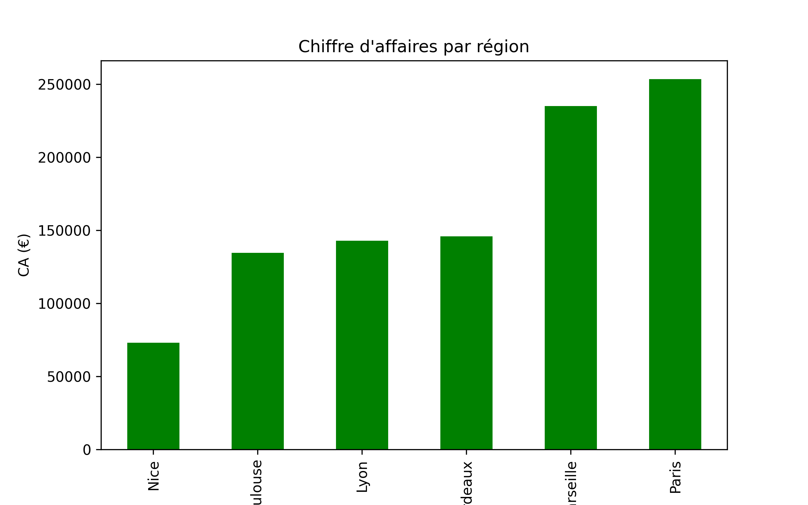
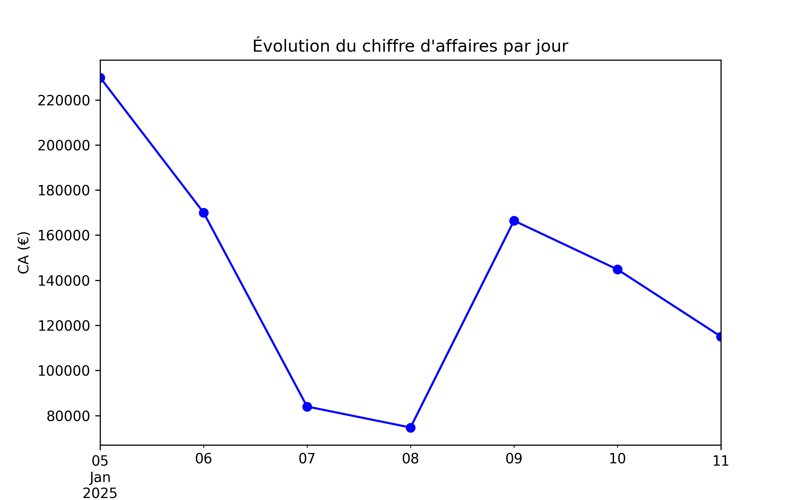
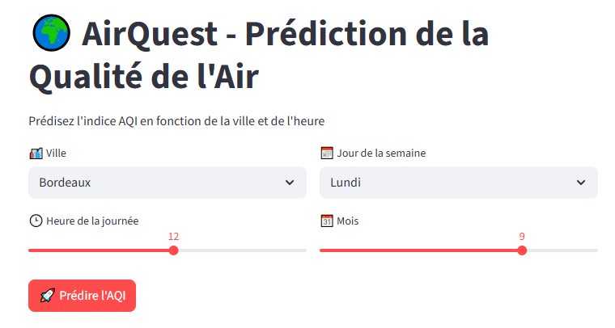
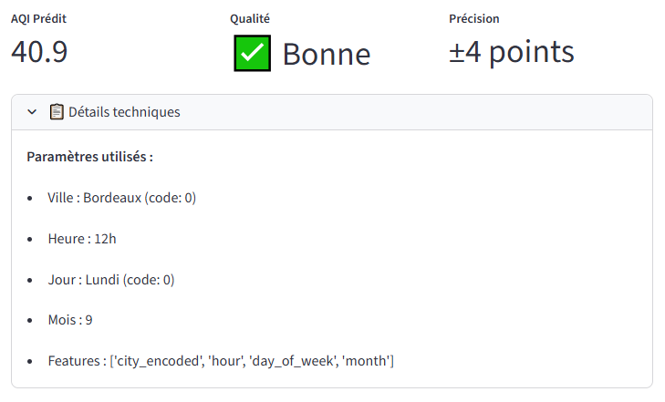
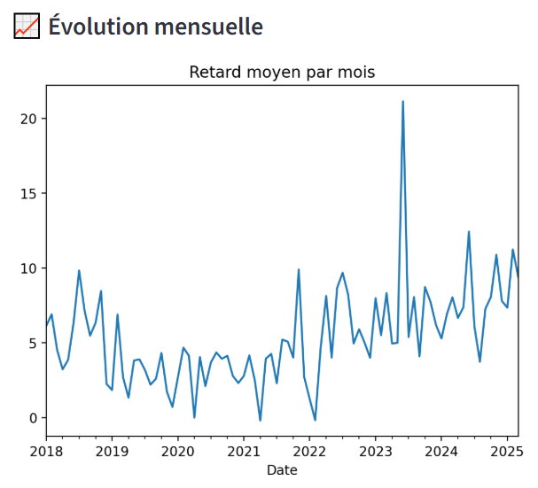
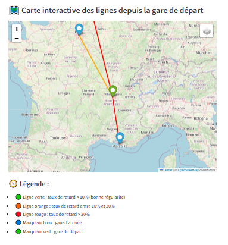
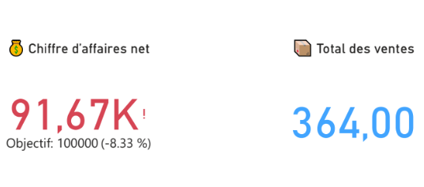
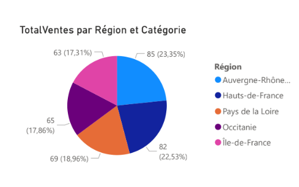

📊 Projets
Analyse de performance commerciale et stratégie produit – Secteur numérique
Evaluation des performances des ventes dans le secteur numérique afin de proposer des actions concrètes pour améliorer la rentabilité et la couverture du marché.
🌐 Voir le projet complet



Application de Prédiction de la Qualité de l’Air
Scraping via API, machine learning, Streamlit, extraction de KPI et cartographie dynamique.
🌐 Voir l'application

Analyse des Flux Voyageurs SNCF
Application Python & Streamlit pour visualiser les flux par gare et région.
🌐 Voir l'application

Tableau de bord des ventes régionales – Power BI
Modélisation en étoile, DAX, cartes interactives, publication sécurisée.
🌐 Voir le PDF
